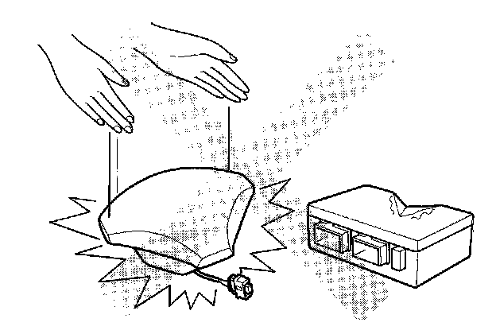

Air Bag Disarming and Arming
SRS (Supplemental Restraint System)
Precautions and Procedures
General Precautions
Please read the following precautions carefully before performing the airbag system service. Observe the instructions described in this manual, or the airbags could accidentally deploy and cause damage or injuries.
- Except when performing electrical inspections, always turn the ignition switch OFF, ground the SCS line with the HDS to take the ECM/PCM out of active status, disconnect the negative cable from the battery, and wait at least 3 minutes before beginning work.
NOTE: The SRS memory is not erased even if the ignition switch is turned OFF or the battery cables are disconnected from the battery.
- Use replacement parts which are manufactured to the same standards and quality as the original parts. Do not install used SRS parts. Use only new parts when making SRS repairs.

- Carefully inspect any SRS part before you install it. Do not install any part that shows signs of being dropped or improperly handled, such as dents, cracks or deformation.
- Before removing any of the SRS parts (including the disconnection of the connectors), always disconnect the SRS connector.
- Use only a digital multimeter to check the system. If it is not a Honda multimeter, make sure its output is 10 mA (0.01 A) or less when switched to the lowest value in the ohmmeter range. A tester with a higher output could cause accidental deployment and possible injury.
- Do not put objects on the front passenger's airbag.
- The original audio and navigation system have a coded theft protection circuit. Be sure to get the antitheft codes and write down the audio presets before disconnecting the negative cable from the battery.
- Before returning the vehicle to the customer, enter the audio, or the navigation code, then enter the audio presets; set the clock.